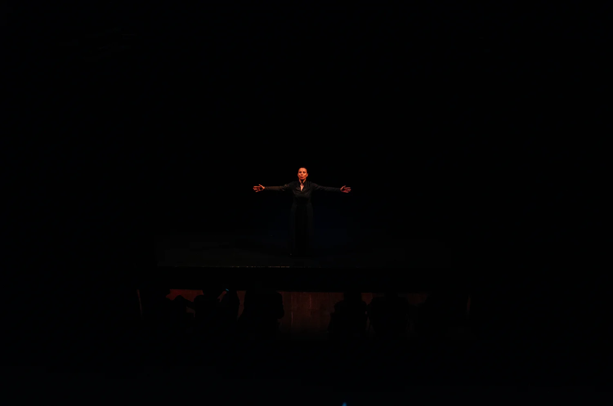
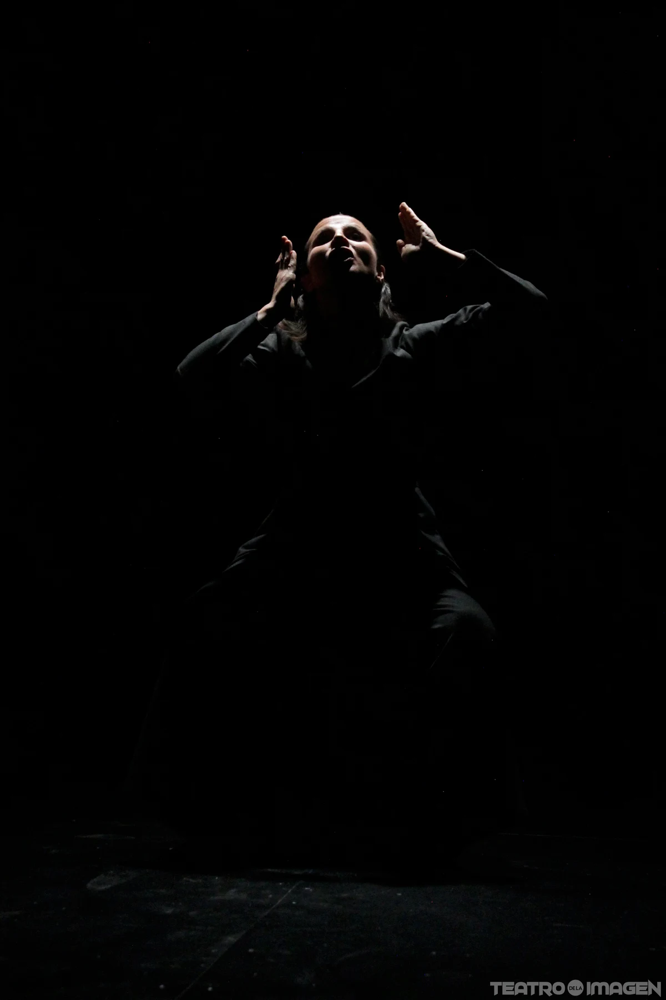

ORESTIADA
Con corazón de mujer

Una actriz encarna múltiples voces y pone en tensión la venganza, la justicia y el lugar de las mujeres en la historia.
Valentina Blando · Texto Giuseppina Norcia, desde Esquilo y la traducción de Pasolini · Dirección Gianluca BarbadoriUna actriz. Muchas voces.
Clitemnestra, Orestes, Agamenón, Ifigenia, Apolo, Atenea y las Erinias atraviesan un mismo cuerpo. El monólogo de Giuseppina Norcia vuelve a Esquilo, pasando por la traducción de Pier Paolo Pasolini, para escuchar la tragedia desde el lugar de las mujeres.
El tribunal de Atenea juzga a Orestes por la muerte de Clitemnestra. En esa cadena de venganzas resuenan el sacrificio de Ifigenia y las preguntas por la verdad, la justicia y el valor desigual que se concede a unas vidas y a otras.

Lo esencial en escena
La intérprete, un cajón o cubo y la luz bastan para transformar la atmósfera. La cercanía con el público permite seguir el tránsito entre personajes y escuchar cada tensión de la palabra.
Equipo artístico
- Actuación
- Valentina Blando Osejo
- Texto
- Giuseppina Norcia, desde Esquilo y la traducción de Pier Paolo Pasolini
- Dirección
- Gianluca Barbadori
- Asistencia
- Daniel Francisco Villamizar Díaz
- Vestuario
- Luisa Toro
- Música
- Ricardo Martínez
- Grabación y mezcla
- Camilo Miranda
- Voz en off
- Ella Becerra
- Fotografía del dossier
- Juan Camilo Arias y Geraldine Ramírez
- Producción
- Ponte tra Culture y La Gruta, con apoyo del Instituto Italiano de Cultura de Bogotá